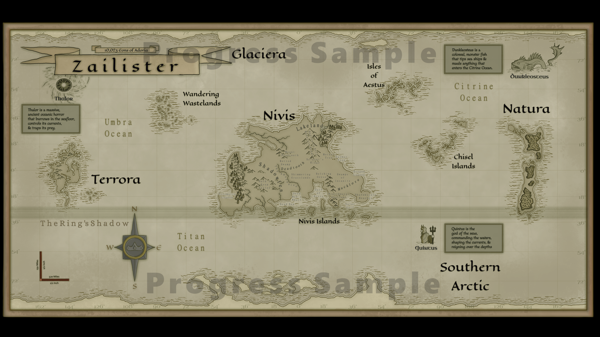

Slayers of Rings & Crowns, Basic Rules
Work in progress. Additional content, expanded rules, and companion books are under active development.
Introduction
This book outlines the core mechanics of Slayers of Rings & Crowns. This book covers character creation, combat, exploration, resource management, time and movement, and several game engines and gameplay systems essential to understanding how to play the game. Additional books, including; the Player and GM Codexes, creature compendiums and planet and lore anthologies, provide expanded rules, detailed guides, and rich background to enhance the player's experience. Use this as a reference to learn the fundamental rules that drive a character's adventures in the universe of Essentia.
Every SORC book, including this one, is available in hardback, softback, and PDF editions. This book is open to every player, but the GM Codex requires a GM Code, issued by passing the SORC Assessment, see GM Codex pg. 1.
Foreword
Welcome to the universe of Essentia, a world of two suns, 13 planets, many moons and is the provider of Slayers of Rings & Crowns' adventuring. SORC combines rich lore, diverse worlds, and a flexible system designed for both storytelling and adventuring that provides many ways to empower a character. Whether players are seasoned adventurers or new to tabletop RPGs, SORC invites them to explore uncharted planets, uncover ancient prophecies, and forge their Character into a Legend.
Our goal is to create an immersive experience where a player's choices matter and the universe adheres to their Character's actions. Here players experience a blend of craftsmanship and combat set against a backdrop of cosmic conflict and world shaping events.
We thank all the players, storytellers, and creators who may bring Essentia to life. Stay tuned for updates, expansions, and community events.
About
SORC is a tabletop role playing game (TTRPG) set in the universe of Essentia. Essentia features two suns; the main magic radiating sun Adoria and its sister, the dying star Tawdry Dwarf, multiple planets and moons, medieval combat, magic, advanced technology, and an ancient prophecy practiced on the Characters' starting planet, Zailister. Players explore different worlds, engage in combat, and develop their characters through a flexible progression system.
Atlas of Zailister

Needed to Play
Participants and Components
One GM and 1 - 5 players (1 requires at least two characters). Players can also be picked up via our world lobbies.
Box Set
The box set comes with an adventure module and all of its Unique details and maps. Modules come in a box developed by Ogre Adventurer and include all of the components needed to run a campaign. The box set also includes a box set code that upgrades players to Pro Member status at our webpage, but this is optional. Character sheets, Lore Sheets and punchout Cards can also be ordered from the catalog that lists Ogre Adventurers P.O Box. GMs and players can run their own homebrew modules as well. There's also a free lighter PDF version available at our website for Basic Members, but players will need their own components.
Pencils and Notepads
Players need this to write down notes. Players will also have other sheets with data to fill out, such as character journals, character sheets, and the Attribute Repository. See below for details.
Smartphone (recommended)
An online device is not needed but recommended for SORC Beyond features (see below), basic calculations, timers etc. Wifi or data also recommended to access SORC Beyond (name pending).
SORC Beyond
Each box comes with a Unique code that allows for online digital content, for printing and other tools. Materials can also be ordered via mail using the SORC Catalog included in this box.
In the Box
| Component | Description |
|---|---|
| Basic Rule Book | The Basic Rules come as paperbacks in the box set. Hard cover and pdf online forms are also available. |
| Dice, D10 x 8 | 4 of each color, split between two colors to represent the tens and ones place in our universal D100 system. |
| Dice, D6 x 9 | Mostly for a reoccurring progression system. Also used to modify D100 roll results. See Attribute and Talents, Skills, and Traits (TST) development below. |
| Dice, D4 x 4 | To boost D100 Luck rolls at 4% per Score in Luck. Also used to modify D100 roll results. See Luck under Traits below. |
| GM Codex | A small paperback version of the GM Codex providing rules and instructions for GMs is included with the Basic Rules. |
| Character Sheets | A sheet that holds all of the character's personal information, such as name, race, gender, culture, key stats and character details. |
| Lore Sheets | A journal that captures a character's background story, mission, personal notes, quest logs, and important memories. It helps track a character's narrative development, locations, landmarks, and world interactions as their story unfolds. |
| Attribute Repository | A formatted sheet used to record points saved or spent on Attributes and Talents, Skills, and Traits (TST) (see below). |
| SORC Cards | Players use a comprehensive Card-based system to track their Abilities, Armaments (and their enhancements) and Companions. Each Card Type has its own layout, Stat and Conditions. Refer to SORC Cards below for details. |
| Vitality Chips | Stackable chips in four colors: Life (red), Mana (blue), Stamina (yellow), Endurance (green). If using the PDF version, any token or coin can be used in place of the Chips. |
| Encounter Tokens | Used to track the number of entries in an Encounter. See Encounter Tokens below for details. |
Basic Rules
Players create and develop characters by assigning dice rolls to Attributes, unlocking skills, and managing resources like health, magic, and stamina. Combat involves tactical attacks, resistances, and limb-specific targeting, while movement dependent on stamina and terrain.
Note: GMs are provided with comprehensive details on each subject below, enabling them to seamlessly add relevant information for players to inquire about.
The Dice, D100 System
Our game utilizes the D100 (sometimes D100 + D100 for Rare/Divine items) universal percentile dice rolling system. Two D10 of a different color are rolled. One color represents the one's place while the other color represents the tens place. So if a 1 is rolled for the ones place and a 0 is rolled for the tens place, the result is 01. If a 2 is rolled for the ones place and a 7 for the tens place, the result is 72. If two 0s are rolled, the result is 100. Finally, for very rare items, Divine, Legendary etc, D100 + D100 is rolled. Repeat the process above and add the two results:
The odds of rolling 01 + 01 to equal the integer 2 or 00 + 00 to equal the integer 200 are astronomically rare, 0.01% chance but only Divine items of Lore have single integer target ranges.
Note: D6 is often rolled during progression, damage and often to modify D100 results.
Understanding Drops, Loot and Discovery
Items obtained through loot, discovery, and crafting are determined by dice rolls, universally D100. Their rank, and in many cases condition and quality, all determining value, are tied to thresholds set by their respective sources' Ranks.
Items acquired through other means, such as purchasing from vendors, trading, questing, and gifting, are usually obtained as written in the module, or often at the discretion of the GM.
The higher the rank, the more extraordinary the circumstances required to obtain it, not just the roll, but the encounter itself.
For example: Asmodeus' "Crown of Darkness" is a Divine item that not only has an extremely rare chance of dropping, but it's rare to even face †Asmodeus, let alone earn the chance of rolling for his loot.
†Asmodeus, as all higher powers may not be killed, but players can still earn loot from these encounters, only available through special Divine Lore Quests.
There are examples of Rank mentioned throughout this book, but Rank is covered more extensively in the GM Codex.
Action Resolution
In SORC, every action is resolved by rolling a D100 (percentile die) against a target threshold set by the difficulty of the task. If the roll meets or exceeds that threshold, the action succeeds. If it falls below, it fails.
- The player performs the action
- The difficulty sets the threshold
- The roll determines the outcome
Target Number
A predefined value that represents the difficulty of an action or challenge. To succeed, players must roll a D100 and meet or exceed this target number. For challenges outside of combat, this is called the Difficulty Score (DIFS), which sets how hard it is to overcome obstacles like disarming traps or hiding. In combat scenarios, the Protection Score (PROTS) functions as the target number an attacker must meet or surpass with their attack roll to land a Hit on an opponent. In both cases, players roll a D100, add relevant modifiers, and compare the result to the Target Number to determine success or failure. Where a class Ability requires a Trait, Skill, or Talent-based check to trigger or resolve, such as a Stealth check, that Ability's own Ability Card lists its DIFS. Trait scores, buffs and debuffs, and Armament bonuses or penalties all factor into a check's final roll, and any of them can apply either positively or negatively depending on the situation: a favorable buff, a positive Trait score, or a bonus raises the roll, while a debuff, a negative Trait score, or an Armament Penalty (see Armament Penalty, pg. 6) lowers it. An Armament's own Enhancement or Impairment changes what the item itself provides rather than the roll directly, see Enhancing and Modification Armaments, pg. 4, though an active Enhancement or Impairment can itself factor into a roll as a Bonus or Penalty, respectively.
Modify the Chance
To determine D100, roll two ten-sided dice to generate a number from 1 to 100. One ten-sided die (usually of one color) represents the tens digit, and the other (of a different color) represents the ones digit, which together form the result from 1 to 100. For example, if the red die (tens) shows 4 and the black die (ones) shows 7, the total roll is 47.
Compare the Roll
If the roll is equal to or greater than the target number, the action succeeds. If the roll is less than that value, it fails.
Examples
A Rogue is trying to disarm a trap with a DIFS of 40% (or d100 result of 40). From the Thief talent tree, the Rogue has a score of 5 in trap tech, granting a +5 bonus, so the rogue only needs to roll a 35. The player rolls a D100 and rolls a 40, easily disarming the trap.
A Monk, during combat decides to use his Trait Deceit which he has a score of 4 in to play dead to avoid further loss of Life. He is trying to fool a wizard with a Trait score in Intuition of 4, so their bonuses balance out. They are also the same level, and the DIFS to fool the wizard is 50. The player rolls D100 and rolls a 54, so the Monk successfully fools Hostile Creatures and avoids being surprised.
A Bast fighter with the Trait Vigilance of 5 boosts their instinctive awareness by 5. The GM sets a base chance of 50% to avoid surprise. The player rolls D100 and rolls a 60, adding the +5 from Vigilance for a total of 65, and the party easily avoids being surprised by a group of sand men fighters. If the group trying to surprise the group were strategists, rogues and an assassin of a thieve's guild, the DIFS would behave higher, maybe 85% to suspect the ambush.